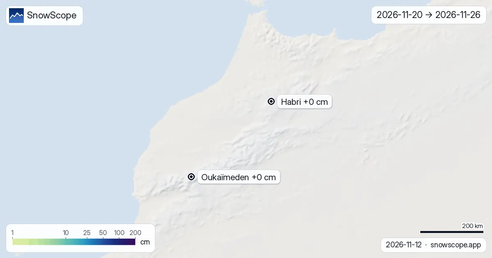

Mappe neve Atlante fino al 26 novembre: poca neve fresca nelle prossime due settimane
Ecco le nuove mappe delle prossime due settimane sull'Atlante (Marocco), dal 13 novembre al 26 novembre: la neve fresca attesa sul terreno, letta da i due modelli globali che arrivano a due settimane, ECMWF e GFS (valore medio, con la forchetta dei due). Il quadro è tranquillo: nessuna località che seguiamo riceve più di circa 0 cm sui pendii alti, e Habri è quella che li riceve (0 cm–0 cm tra i modelli). Sul terreno la prima cosa che controlliamo è l'ombra: la neve dura dove il sole non arriva.
Le previsioni neve in tempo reale per Habri nell'app SnowScopeAltezza neve, allerte powder e mappa 3D, gratis.
Località per località, i prossimi 14 giorni
Habri (Marocco): quasi nulla, circa 0 cm in tutta la quindicina.
Oukaïmeden (Marocco) resta all'asciutto: 0 cm al massimo nelle due settimane.
| Località | Altezza neve | Neve fresca, 72 h | In arrivo, prossimi giorni | Quota max |
|---|---|---|---|---|
| Habri | 0 cm | 0 cm | 0 cm | 2.108 m |
| Oukaïmeden | 0 cm | 0 cm | 0 cm | 3.258 m |
Prima settimana contro seconda
Divisa per settimana, la prima (dal 13 novembre al 19 novembre) porta il 11 % della neve delle due settimane sulla regione; la seconda (dal 20 novembre al 26 novembre) il resto.

Neve fresca per quota
La quota decide quasi tutto. Sulle montagne della regione, le due settimane danno: tra 1.000 m e 1.500 m: quasi nulla; tra 1.500 m e 2.000 m: quasi nulla; tra 2.000 m e 2.500 m: quasi nulla; tra 2.500 m e 3.000 m: quasi nulla; tra 3.000 m e 4.500 m: quasi nulla.
I giorni da tenere d'occhio
Nessun giorno spicca: in nessuno dei 14 giorni diverse delle 3 località seguite ricevono 5 cm o più.
Come leggere le mappe
Come leggerle: una mappa per le due settimane insieme, una per settimana. Più chiaro è il verde, meno neve fresca; i blu profondi e i viola segnano i grandi totali. Ogni spillo mostra i pendii alti della località.
Prendete la seconda settimana come una direzione. Quando i due modelli concordano, la forchetta è stretta; quando è larga, aspettate le mappe successive prima di prenotare. Nuove mappe escono ogni mattina.
Consigli per sciatori
- Pianificate la prima settimana con queste mappe; tenete la seconda flessibile e ricontrollate tra qualche giorno.
- Lo zero termico è una previsione e può spostarsi di diverse centinaia di metri, il che cambia dove la pioggia diventa neve: ricontrolla la mappa il giorno prima.
- Prima di ogni uscita in fuoripista o scialpinismo leggi il bollettino valanghe ufficiale (link qui sotto).
- Neve sulla mappa non significa località aperta: controlla impianti e date sul suo sito.
Su questi numeri
Le altezze neve delle località sono la neve più alta sui pendii superiori secondo il modello neve di SnowScope (circa 1 km, calcolo del 12 novembre); sono stime per un'area, non una misura in un punto. I valori delle stazioni sono misure alla data indicata. Le previsioni possono cambiare. Leggi sempre il bollettino valanghe ufficiale prima del fuoripista.
Cita questo articolo
Per ricerca, didattica o stampa: numeri e grafici sono liberamente riutilizzabili con licenza CC BY 4.0 citando così.
SnowScope (2026), Mappe neve Atlante fino al 26 novembre: poca neve fresca nelle prossime due settimane, https://snowscope.app/blog/it/2026/11/atlas-morocco-2-week-snow-forecast-maps-12-november-2026.html, consultato il 2026-11-12
SnowScope (Atlas Labs). (2026, November 12). Mappe neve Atlante fino al 26 novembre: poca neve fresca nelle prossime due settimane. SnowScope snow reports. https://snowscope.app/blog/it/2026/11/atlas-morocco-2-week-snow-forecast-maps-12-november-2026.html
BibTeX
@misc{snowscope2026atlasmorocco2weeksnowfor,
author = {{SnowScope (Atlas Labs)}},
title = {Mappe neve Atlante fino al 26 novembre: poca neve fresca nelle prossime due settimane},
year = {2026},
month = nov,
howpublished = {\url{https://snowscope.app/blog/it/2026/11/atlas-morocco-2-week-snow-forecast-maps-12-november-2026.html}},
note = {Published 2026-11-12 18:20 UTC; accessed 2026-11-12}
}· CC BY 4.0 · Metodi, dati e strumenti →
Habri: neve e temperatura per quota, quest'inverno vs lo scorso (strumenti) →
Segui Habri
Gratis: un messaggio quando arriva la neve e il meteo ogni mattina.
Altri bollettini neve

Le località sciistiche dell'Atlante oggi non trattengono neve sulle piste. La neve è immagazzinata solo sulle vette più alte: circa 40 km² di …

Le località sciistiche dell'Atlante oggi non hanno neve sulle piste. Il nostro modello trova neve solo sulle vette più alte: circa 80 km² di …

Oukaimden (Marocco) ha oggi la neve più alta sull'Atlante (Marocco), con circa 1 cm sui pendii superiori. Seguono Habri con 0 cm e Michlifen con …